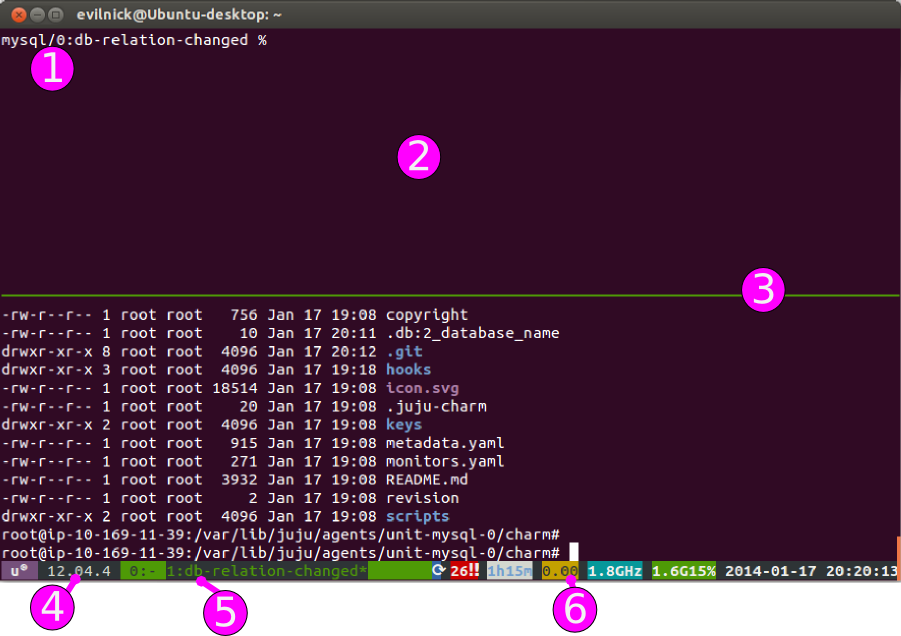

Debugging hooks
Not everything works first time, and sometimes even when it does work, things
don't happen quite as you expected. That's why Juju includes two tools to help
you debug charm hooks: The juju debug-hooks command and the juju debug-log
command.
The 'debug-hooks' command
The juju debug-hooks command accepts a unit and an optional list of hooks to
debug (which must be named individually in a space-delimited list) or no hook
names, causing all hooks to be debugged:
juju debug-hooks <service/unit> [hook-name hook-name2 ...]
So for example, imagine you are deploying the mysql charm and you want to only
check the db-relation-joined and db-relation-broken hooks:
juju debug-hooks mysql/0 db-relation-joined db-relation-broken
Note: It is possible and often desirable to run debug-hooks on more than one unit at a time. You should open a new terminal window for each.
Running a debug session
When you run the debug-hooks command, Juju creates a slightly customised tmux
session on the machine running the requested unit (if you are unfamiliar with
tmux, see the primer at the end of this section).
The tmux session will start with window 0. This window does nothing other than
keep the session alive (though it can be used, for example, to view the logs for
that unit (in /var/log/juju/).
When the first hook event is queued for a hook that is in the list of those to be debugged:
- a new window will be attached to the tmux session.
- the bottom left of the status bar will change to indicate the current hook that has been trapped.
- the prompt will change to indicate the hook related to the window (e.g.
mysql/0:db-relation-joined % - the shell will be running in the standard hook environment.
- additionally,
$JUJU_HOOK_NAMEis set appropriately.
To proceed, you should manually execute the hook, or perform whatever other actions you want. At any time during a debug-hooks window 1 session you can run any of the standard hooks (install, start, stop, config-changed, upgrade-charm) however you can not run any of the relation hooks - these should only be run during their respective trapped events.
For example, for the db-relation-joined hook we mentioned above, you could
run:
./hooks/db-relation-joined
Whilst you are debugging a hook, it is possible that other hooks will be queued to run. Even hooks which are not in your list to debug will be suspended in the queue until you exit your current window. See the special considerations below.
The queue for pending hooks will restart once you exit the window with an exit
command.
Note: To allow Juju to continue processing events normally, you must exit the hook execution window with the exit command, otherwise all further events on that unit will be paused indefinitely.
The queue can be halted by exiting with an exit 1 command, which will flag the
hook as failed. Juju will revert to its normal behaviour of suspending
everything until this error status is resolved, which you can do by issuing the
command (from your juju terminal window, not the debugging window) of juju
resolved <unit>.
You can finish your debugging session by closing all windows in the tmux session. Make sure to exit appropriately from all hook windows before terminating.
Debugging early hooks
The install, config-changed, and start hooks often execute quite soon
after the unit comes up, making it difficult to start a debug-hooks session in
time to intercept them. If you're having difficulties, you can temporarily
return an error code from your install hook (e.g. add an exit 1 at the end
of it), and start your session only when the unit reports an error status
. You should then run juju resolved --retry for
the affected unit, and go back to the debug-hooks session to interact.
Special considerations
While you're debugging hooks for one unit on a machine, you're blocking execution of all hooks on that machine. This is generally helpful, because you don't want to have to contend with concurrent changes to the machine's software, but you should be aware that multiple debug-hooks sessions for units assigned to the same machine will block one another, and that you can't control relative execution order directly (other than by erroring out of hooks you don't want to run yet, and retrying them later).
The 'debug-log' command
Sometimes for working out where problems occur, it is simply enough to be able
to view the log files. As well as the logs on individual units, Juju keeps a
consolidated log file which can be viewed with the juju debug-log command.
As this is a consolidated log you don't need to specify a unit.
Usage:
juju debug-log [-n <number>] [-n +<number>] [-e <environment>]
Where the -n switch is given and followed by a number, the log will be tailed
from that many lines in the past (i.e., those number of existing lines in the
log will be included in the output, along with any subsequent output).
Where the -n switch is given and followed by a '+' and a number, the log will
be tailed starting from that specific line in the log file.
This somewhat unusual syntax has been chosen so that the command behaves like
the standard Unix tail command. In fact, it is analagous to running tail -f
[options] /var/log/juju/all-machines.log on the bootstrap node.
Examples:
To read the ten most recent log entries and follow any subsequent entries to the log:
juju debug-log
To read the thirty most recent log entries and follow any subsequent entries to the log:
juju debug-log -n 30
To read all the log entries and follow any subsequent entries to the log:
juju debug-log -n +1
To read the twenty most recent log entries on the 'local' environment:
juju debug-log -n 20 -e local
And of course it is possible to combine the command with other shell tools to make the output more useful, e.g. to filter the whole log for lines matching 'INFO':
juju debug-log -n +1 | grep 'INFO'
Note: As the command uses the follow behaviour of tail by default, you do not need to specify the -f switch. You will also need to end the session with Control-C
What on earth is tmux?
The Ubuntu images used by Juju also include a slightly customised version of
tmux, a terminal multiplexer.
It is very useful when debugging hooks, as new hook events can be opened as windows within tmux, meaning you don't need to deal with so many open windows, or (hopefully) get confused as to where to run commands.
This version runs through a layer called "byobu", which additionally adds some useful status information at the bottom of the screen.
Some useful definitions in the context of tmux:
Session
A running tmux environment, involving one or more windows/panes.
Window
A single screen, possibly containing many panes.
Pane
A rectangular section of the current window, where commands are entered.
A session may look something like this:

Key:
- The default prompt is changed to indicate the machine you are running on, and the hook that you are debugging.
- This is a tmux pane, after the screen has been split horizontally.
- Pane dividing line. The active pane is the one with the cursor in!
- The byobu display shows the OS and version info.
- This area lists the currently open windows, the current one is highlighted.
- The end part of the status bar indicates uptime, load, processor, memory usage and the current date/time.
Key bindings
All of tmux's special functions can be run by pressing the prefix-key followed
by another key or key combination. The default prefix-key for tmux is Control-b,
but many users find this an unnecessary stretch. This version uses Control-a as
the prefix key, which is a bit easier on the fingers and is also the same
combination used by screen, an alternative terminal multiplexer.
There are many key-combinations, not all of which are of use in the task at hand. Here are some of the ones you may find useful:
Window-related:
Control-a 0
Switch to window 0 (similarly, any other numbered window).
Control-a c
Create a new window.
Control-a n
Switch to the next window.
Control-a p
Switch to the previous window.
Control-a w
Choose a window from a list.
Pane-related:
Control-a %
Split pane vertically.
Control-a |
Split pane horizontally.
Control-a o
Switch focus to next pane.
Control-a ;
Switch focus to the previous pane.
Control-a !
Move current pane to a new window.
Control-a x
Kill the current pane.
Miscellaneous:
Control-a ?
Show currently configured keys.
Control-a :
Enter the command prompt (for tmux commands)
You can get more info on tmux and its commands at the relevant Ubuntu manpage entry.